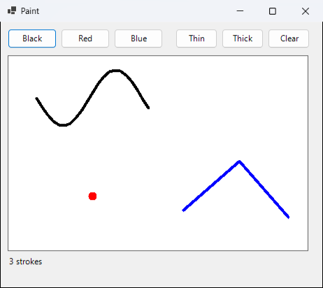

Drawing with the mouse
The mouse events say where the pointer is and whether a button is down. This lesson builds a small paint program: press the button and move to draw, choose a color and a pen size, clear the picture, and test it by calling the same functions that the events call.
What you will learn#
- the events MouseDown, MouseMove and MouseUp,
- the event argument:
X,Y(pixels from the top left of the control), - a stroke as three steps and a flag that says the button is down,
- drawing on a
Bitmapthat aPictureBoxshows, - a round pen, and why the first point of a stroke is a circle,
- testing a mouse program by reading pixels.
The tutorial Drawing and animation drew with a timer and the keyboard. Here the mouse draws.
The program#
# drawing with the mouse - MouseDown, MouseMove and MouseUp: a small paint program with colors, a pen size, clear and save
load "dotnet.ring"
using {
"System"
"System.IO"
"System.Drawing"
"System.Drawing.Imaging"
"System.Windows.Forms"
}
# controls and state that the event code uses are global variables
oForm = ""
oPicture = ""
oBitmap = ""
oStatus = ""
cColor = "Black"
nPenSize = 4
lDrawing = False # is the mouse button down?
nLastX = 0
nLastY = 0
nStrokes = 0
func main
oForm = uiForm("Paint",460,380)
uiButton(oForm,"Black",10,10,70,28,"setColor('Black')")
uiButton(oForm,"Red",86,10,70,28,"setColor('Red')")
uiButton(oForm,"Blue",162,10,70,28,"setColor('Blue')")
uiButton(oForm,"Thin",250,10,60,28,"nPenSize = 2")
uiButton(oForm,"Thick",316,10,60,28,"nPenSize = 12")
uiButton(oForm,"Clear",382,10,60,28,"clearCanvas()")
# The picture box shows a Bitmap, and the program draws on the bitmap. The mouse events say where the mouse is: aDotNetArgs[2] is the
# event argument, with X and Y (in pixels from the top left corner of the picture box) and the Button.
oBitmap = new Bitmap(430,280)
oPicture = uiPictureBox(oForm,10,48,430,280)
oPicture.Image = oBitmap
oPicture.BorderStyle = "FixedSingle"
oPicture.setMouseDownEvent("mouseDown(aDotNetArgs[2].X,aDotNetArgs[2].Y)")
oPicture.setMouseMoveEvent("mouseMove(aDotNetArgs[2].X,aDotNetArgs[2].Y)")
oPicture.setMouseUpEvent("mouseUp()")
oStatus = uiLabel(oForm,"Press the mouse button on the white area and move",10,334,430,22)
clearCanvas()
uiRun(oForm)
func clearCanvas
oGraphics = new Graphics().FromImage(oBitmap)
oGraphics.Clear(uiColor("White"))
oGraphics.Dispose()
oPicture.Refresh()
nStrokes = 0
oStatus.Text = "Clear"
func setColor cName
cColor = cName
oStatus.Text = "Color: " + cName
# The three steps of a stroke. Down starts it (and draws a dot, so that a click without a move also leaves a mark), Move continues it
# with a line from the last place to this one, and Up ends it. Moving the mouse with the button up draws nothing.
func mouseDown nX,nY
lDrawing = True
nLastX = nX
nLastY = nY
drawDot(nX,nY)
func mouseMove nX,nY
if not lDrawing
return
ok
drawLine(nLastX,nLastY,nX,nY)
nLastX = nX
nLastY = nY
func mouseUp
if lDrawing
nStrokes++
oStatus.Text = "" + nStrokes + " strokes"
ok
lDrawing = False
# a dot: a filled circle with the size of the pen (a line of length zero draws nothing, so the first point of a stroke is a circle)
func drawDot nX,nY
oGraphics = new Graphics().FromImage(oBitmap)
oBrush = new SolidBrush(uiColor(cColor))
nRadius = nPenSize / 2
oGraphics.FillEllipse([ :brush = oBrush, :rect = new Rectangle(nX - nRadius,nY - nRadius,nPenSize,nPenSize) ])
oBrush.Dispose()
oGraphics.Dispose()
oPicture.Refresh()
# a line with a round pen: round ends make the joints of the small steps of the mouse smooth
func drawLine nX1,nY1,nX2,nY2
oGraphics = new Graphics().FromImage(oBitmap)
oPen = new Pen(uiColor(cColor)) {
Width = nPenSize
StartCap = "Round"
EndCap = "Round"
}
oGraphics.DrawLine([ :pen = oPen, :pt1 = new Point(nX1,nY1), :pt2 = new Point(nX2,nY2) ])
oPen.Dispose()
oGraphics.Dispose()
oPicture.Refresh() # draw the picture box again
How it works#
The three events#
setMouseDownEvent, setMouseMoveEvent and setMouseUpEvent of the picture box run Ring code. The code has the event arguments in aDotNetArgs[2]: aDotNetArgs[2].X and .Y are the place of the pointer in pixels from the top left corner of the picture box. The code passes them to functions (mouseDown(x, y)), and the functions do the work. This is the whole design: the events only translate, so a test can call mouseDown(50, 100) without a mouse.
A stroke#
A stroke has a start, a middle and an end. mouseDown sets lDrawing to true and remembers the place; mouseMove draws a line from the remembered place to the new place and remembers the new place; mouseUp sets the flag to false and counts the stroke. MouseMove also runs when the button is up, and then the function returns at once: moving the pointer without the button draws nothing. Many short lines, one for each mouse event, make a smooth curve.
Drawing on a bitmap#
The program does not draw on the screen. It draws on a Bitmap (the tutorial Images) with a Graphics object, and the PictureBox shows the bitmap. Refresh() draws the picture box again after each change. Because the picture is in a bitmap, it stays when another window covers the form, it can be saved (Save), and a test can read it (GetPixel).
The pen#
Pen has a color and a Width. StartCap = "Round" and EndCap = "Round" make the ends of each line round, so the small steps join without gaps. A line of length zero draws nothing, so the first point of a stroke is a filled circle with the size of the pen: a click without a move leaves a dot.
The test#
The test acts like a user: a stroke from (50, 100) to (150, 100) in steps of 10 pixels, then it reads the pixel in the middle (black) and the one above the line (white). A move with the button up leaves the canvas white. A click in red with a thick pen leaves a red dot. Save writes a PNG, and Clear makes the picture white again. The test needs no mouse and no screen position, and it checks the result: the pixels.
The checks of this program are in a separate file, selftest/ch10_paint.ring:
# the checks of ch10_paint.ring: run with ring ch10_paint.ring --selftest (the program loads this file and runs selfTest() once its window is shown)
func selfTest
# a new canvas is white
dnAssert("white at the start",oBitmap.GetPixel(100,100).Name,"ffffffff")
# a stroke from (50,100) to (150,100): the mouse goes down, moves in steps and goes up
mouseDown(50,100)
for nX = 60 to 150 step 10
mouseMove(nX,100)
next
mouseUp()
dnAssert("black in the middle",oBitmap.GetPixel(100,100).Name,"ff000000")
dnAssert("white above",oBitmap.GetPixel(100,80).Name,"ffffffff")
dnAssert("one stroke",nStrokes,1)
# moving with the button up draws nothing
mouseMove(200,200)
mouseMove(250,200)
dnAssert("no line without the button",oBitmap.GetPixel(225,200).Name,"ffffffff")
# a click without a move leaves a dot, in another color and a thick pen
setColor("Red")
nPenSize = 12
mouseDown(300,150)
mouseUp()
dnAssert("a red dot",oBitmap.GetPixel(300,150).Name,"ffff0000")
dnAssert("two strokes",nStrokes,2)
# the picture can be saved
cFile = new Path().Combine([ new Path().GetTempPath(),"ringdotnet-paint.png" ])
oBitmap.Save([ :filename = cFile, :format = new ImageFormat().Png ])
dnAssert("the file has data",new FileInfo(cFile).Length > 0,True)
new File().Delete(cFile)
# clear: white again
clearCanvas()
dnAssert("white after clear",oBitmap.GetPixel(100,100).Name,"ffffffff")
dnAssert("no strokes after clear",nStrokes,0)The picture box has the size of the bitmap. If a picture box is bigger than the bitmap and SizeMode stretches it, the pointer positions must be scaled to the bitmap first.
What you learned#
- the three mouse events and their arguments,
- a stroke with a flag,
- drawing on a bitmap and showing it in a picture box,
- a test that calls the functions of the events and reads pixels.
Exercises#
- Add a button Eraser that draws in white with a thick pen.
- Add the color Green and a button that opens a
ColorDialog. - Draw a straight line from the first place to the current one while the button is down (a rubber band): keep a copy of the bitmap and draw on the copy.
- Add Undo: keep a list of bitmap copies, one for each stroke.